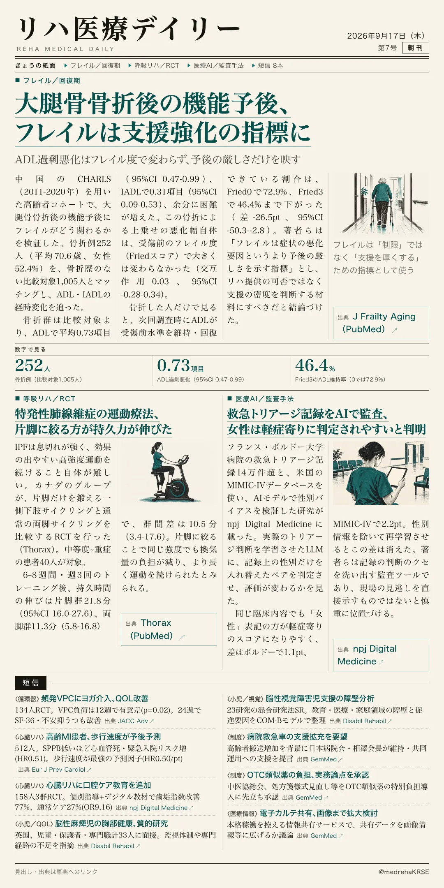
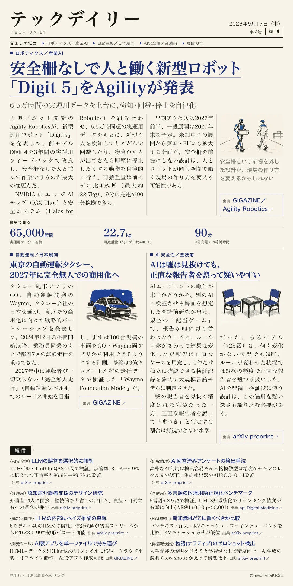

リハ医療デイリー
大腿骨骨折後の機能予後、フレイルは支援強化の指標に
ADL過剰悪化はフレイル度で変わらず、予後の厳しさだけを映す
中国の高齢者コホートで骨折例252人と非骨折1,005人を比較。フレイルが重いほどADL回復率は下がるが、著者は「リハ制限でなく支援強化の判断材料に」と結論。

テックデイリー
安全柵なしで人と働く新型ロボット「Digit 5」をAgilityが発表
6.5万時間の実運用データを土台に、検知・回避・停止を自律化
人型ロボット大手Agilityが、安全柵なしで人と並んで作業できる新型「Digit 5」を発表した。可搬重量は前モデル比40%増、9分の充電で90分稼働。2027年に製造・倉庫向けの一般展開を計画する。
